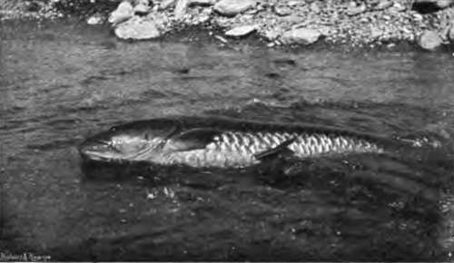
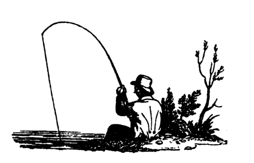

Chapter III. The Mahseer And The Bola
Description
This section is from the book "Fishing", by Horace G. Hutchinson. Also available from Amazon: Fishing.
Chapter III. The Mahseer And The Bola
Natural History And Classification
The carp family is very richly represented in the fresh watei^ of India and Burma, but, with a few exceptions, by genera totally different from those with which we shall deal in Chapter XIV. One of these exceptions is offered by the mahseer and its near allies, which fall under the same genus as our common British barbel, Barbus vulgaris. These fishes belong, however, to a distinct section of the genus, characterised by two pairs of barbels, very large scales, and a strong, bony, smooth spine in the dorsal fin, in front of the branched rays; a section including a great number of closely allied species, inhabiting Southern Asia and Africa, and of which the well-known Bynni of the Nile may be taken as the type.
Under the name of "mahseer" anglers usually confound several species of large Barbus, which agree in having an elongate body covered with large, hard, finely striated scales, numbering from twenty-four to thirty-five in a longitudinal series (the lateral line) extending from above the gill-cover to the root of the forked caudal fin; a scaleless head with large, protractile mouth and well-developed, sometimes thick and leathery, lips; two pairs of elongate barbels or feelers, one on the side of the snout above the upper lip, the other at the angle of the mouth behind the lip ; the dorsal fin situated above the ventrals and containing nine or ten branched rays behind the bony, spine-like ray; and a short anal fin with only five branched rays, the last of which, as in the dorsal, is cleft to the base and is sometimes reckoned as two. As in all the members of this family (Cyprinidse), the mouth is toothless, but large teeth, some molarlike, others spoon-shaped, are present in the throat (the pharyngeal teeth), where they form three series on each of the lower pharyngeal bones, and, grinding against a large, horny plate under the occiput, serve to masticate the food, and especially to crush hard objects such as seeds, shells, and the carapace of crustaceans.
6.- A Raft In The Jebouris.
A Thirty-Two Pound Mahseer.
The above definition will suffice for the recognition of a mahseer, in the wide or popular sense, among all other Indian fishes. But closer attention to details is required for the precise identification of the large species which cluster round this type, and for this purpose I would recommend the use of the following characters, easy enough of application, which are best expressed in tabular arrangement.1 This " key" is, however, quite provisional, and will be much improved as we gain a better knowledge of this difficult group, the study of which is urgently recommended to naturalists in India. Notwithstanding its excellent illustrations, the great work on the Fishes of India, by the late Dr. F. Day, is an unsatisfactory guide to the discrimination of the species of "mahseer," a subject which the author does not appear to have grasped.
A. Lower lip continuous across the chin.
a. Twenty-four to 27 scales in the lateral line, 3½ or 4 in an oblique series between the origin of the dorsal fin and the lateral line, and 2 or 2$ between the lateral line and the root of the ventral fin; lips thick, both upper and lower often produced into more or less elongate, pointed lobes. B. mo sal. b. Thirty-two to 35 scales in the lateral line, 5 or 5½ in an oblique series between the origin of the dorsal fin and the lateral line, and 2i or 3 between the lateral line and the root of the ventral fin; lips moderate, never forming lobes. B. chilinoides.
1 For the manner in which the scales and fin-rays must be counted, cf. the figures, given below, of the rudd, p. 124.
B. Lower lip interrupted on the chin; 4 to 5 scales in an oblique series between the origin of the dorsal fin and the lateral line.
a. Twenty-eight to 31 scales in the lateral line; head more than once and a half as long as broad. B. hexagonolepis b. Twenty-five to 29 scales in the lateral line; head short, not once and a half as long as broad. B. carnaticus. The mahseer or mahaseer proper, Barbus mosal (of which jB. tor, B. putitora, and B. hexastichus are synonyms), inhabits nearly the whole of India and Ceylon, extending to Kashmir, Sikkim, and Assam. It is the largest of the barbels, attaining a length of from 3 to 6 feet, or even 9 feet, according to Hamilton Buchanan, the size depending much on the nature of the waters it frequents. In some rivers mahseer do not run above 10 or 12 lbs., whereas in others they have been taken weighing 40, 50, or even as much as 74 lbs. Although the scales seem large enough on the fish, their apparent size is nothing as compared to what is seen when they are detached, for only about one-fourth of their surface is exposed, the rest being concealed under the overlapping parts of the adjacent scales; an isolated scale of a large mahseer may be fully as large as the palm of the hand, and playing cards and menu cards are made of them in some parts of India. The extraordinary development of the lips into long, pointed median lobes, which is a striking feature in a typical mahseer, is not a constant character, as it reaches a greater degree in some specimens than in others, and may even be absent; it is not a sexual peculiarity, nor is it connected with age. The length of the bony ray of the dorsal fin, as compared to that of the head, is also variable, and, according to Day, it is generally greater in specimens from Southern India. The same author points out that, in the form which he distinguishes as B. hexasftchus, specimens from the plains have the head comparatively longer than those from the hills. The colour varies much, some specimens being golden with brown back, others silvery with black or greenish back; the ventral, anal, and caudal fins are yellow or reddish.
Like our European barbels, the mahseer draws on both the animal and the vegetable kingdoms for its food; aquatic weeds of all sorts, seeds, worms, crustaceans, insects, snails, and small fish have been found in the stomach; but crabs, snails, and fish seem to be its favourite foods. Though never leaving fresh waters, the mahseer is more or less migratory in its habits, travelling long distances up rivers for the sake of breeding. By depositing their spawn in the higher parts of the rivers, which are only accessible to them during the floods, the fishes secure for their fry waters more suitable from their dwindled dimensions than the deeper current of the lower river, to which the parents return after spawning. As observed by Mr. H. S. Thomas, " before the spawn they have deposited is hatched, they are completely cut off by paucity of water from their fry, so that till the commencement of the same monsoon in the following year they cannot return to devour them."
Barbus hexagonolepis, the Bokar or Booloah of Assam and the larger rivers of the Himalayas, is said to attain 9 feet in length, although commonly not over 2 feet. Its colour is a deep bluish grey, the fins darker.
Barbus chilinoides, the Chitrahtoo of the Ganges and Assam and the foot of the Himalayas, grows only to 21 feet. Its colour is golden above, silvery below, with black spots at the base of the scales; the fins are reddish.
Barbus carnaticusy the Giddi-kaoli or Gidpakka, is another fine fish, somewhat different in appearance from its short, blunt head ; it attains at least 25 lbs. in weight. It is greenish brown above, becoming dull white glossed with gold on the sides and beneath, the fins greyish. It inhabits the rivers along the base of the Nilghiris, Wynand, and South Canara hills, and has been introduced into the Ootocamund Lake.
The rivers of India and Burma possess another type of Cyprinid fish, the Barilius, which, though owing to their smaller size they have not the importance of the mahseer, are yet very game fish, taking the fly well; they have often been compared to trout, which they resemble in their deeply cleft mouth without distinct barbels. The dorsal fin is placed farther back than in the Barbus, its base corresponding to the space between the ventral and anal fins. They are elegant silvery fishes with steel-blue spots or vertical bars on the sides, and yellow or orange fins. Several species occur in India, the most important being the Bola (Barilius bola), called Rajah Mas, or " chief of the fishes," in Assam. It is found in the North-West Provinces, Bengal, Assam, and also in Burma, attaining at least a foot in length; a specimen caught in Assam by Mr. Hanney is stated to have weighed 5 lbs. The other species range from 5 to 7 inches in length. All Barilius are exclusively carnivorous, feeding on worms, crustaceans, insects, and small fishes.

Continue to:
- prev: Tarpon And Other Big Fishes Of Florida. Part 4
- Table of Contents
- next: Chapter IV. Mahseer Fishing